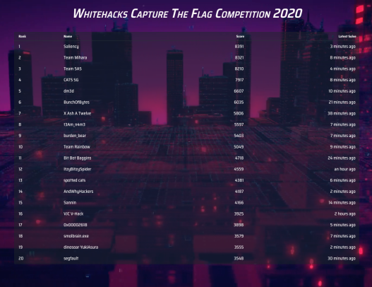

Original Github Link
SMU Whitehacks

- https://sis.smu.edu.sg/newsletter/35096
- https://github.com/Whitehat-Society/whitehacks-challenges-2020-public
Event Details
Due to Covid 19, the event was held online on 2/8/2020, 9.10am to 5.10pm, on https://play.whitehacks.ctf.sg. There also was a Zoom Livestream of the scoreboard (Good to know no annoying hidden scoreboards near the end of the event).
I participated and led the team AndWhyHackers (get it? because NY for Nanyang?), with these people
I did a good number of challeges which were interesting. The challenges were quite interesting. A few were very beginner friendly and nice like gdbtutor and BofSchool
I tried to do several various Reverse Engineering challenges , but I was stuck and didn't know what to do.
In the end, I feel we did decent. Out of 63 teams who got points, we got 14th. 
My Stuff
Here are the flags for listening to the talks on Saturday (1/8/2020) and in the morning at 8am-9am
- (GovTech):
WH2020{paying_attention_points_15362} - (SQLi):
WH2020{i_love_whitehacks_2020_loot_crate_929292} - (CSIT):
WH2020{bonus_points_1a2b6c7d3e1} - (RE):
WH2020{random_flag_name_cant_guess_121212} - (CSA):
WH2020{final_bonus_day_1_yay_woohoo} - (GovTech Day 2):
WH2020{all_the_best_CTF_whitehacks2020_GLHF_8934}
Here are the flags for listening to the booths:
- CSIT:
WH2020{r00ty0uRfutur3w1ThC$1T} - CSA:
WH2020{CSA_IS_SOOOOOOOOO_AMAZING?!?!?} - GovTech:
WH2020{GOVTECH_IS_CRAZY_AWESOME?!?!?}
Here are the main challenges I did (or helped out with). Just traverse the directories to find them
CYS/CYS - 49 53 20 54 48 49 53 20 48 45 58 3fCYS/CYS - Little Matryoshka DollBinary Exploitation/BofSchoolRE/gdbtutorMisc/Talk To MeGovTech/GovTech SecTech (3/6) - Insecure DeserializationGovTech/GovTech/GovTech SecTech (6/6) - OSINT(Helped byundefined-func)GovTech/GovTech SecTech (2/6) - IDOR(Helpedundefined-func)Crypto/RSB (2/4)
Some solutions for other challenges (Probably not done by me)
For GovTech SecTech (1/6) - LFI:
- Go to
http://sec-tech.cf/transcript.php?user=temp_acc&password=temp_pass&user_id=1&file=/etc/passwdto get a list of passwd - You can figure out the directory of the flag from this so go to
http://sec-tech.cf/transcript.php?user=temp_acc&password=temp_pass&user_id=1&file=/secret_path/lfi_flag.txtand you can find the flagWH2020{Loc@l_F1l3_Inclus10n_buT_N0t_sh3ll}
Other's Writeups
Obviously I'm not very good at cybersecurity, so check out other write ups for the challenges!
- https://github.com/IRS-Cybersec/ctfdump/tree/master/Whitehacks%202020
- https://github.com/PotatoStealer/Archives/tree/master/WhiteHacks2020
- https://github.com/BunchOfBytes/CTF-Writeups/tree/master/Whitehacks2020
- https://github.com/jadenong/whitehacks20
Alternatively, if you actually participated in the competition, check out the discord server for writeups under #writeups